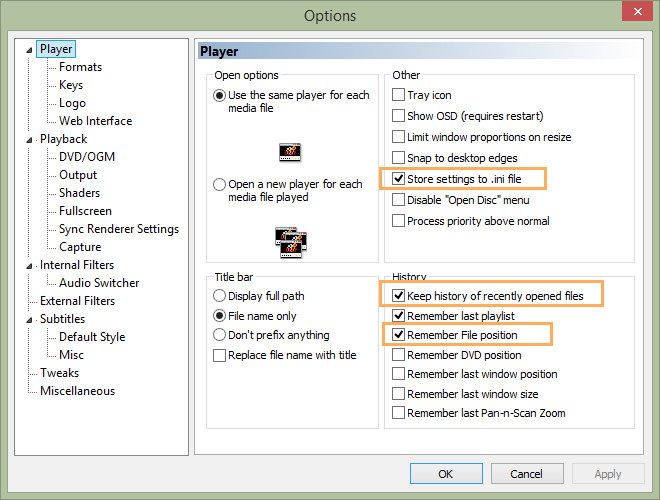
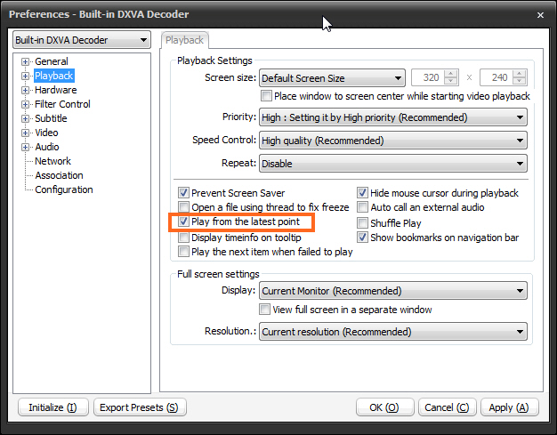
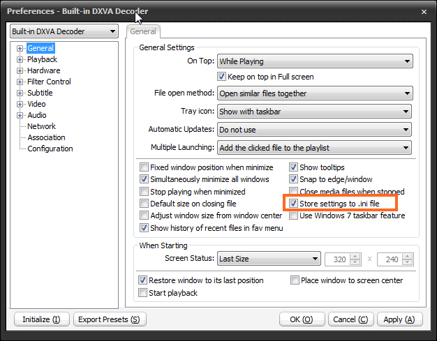
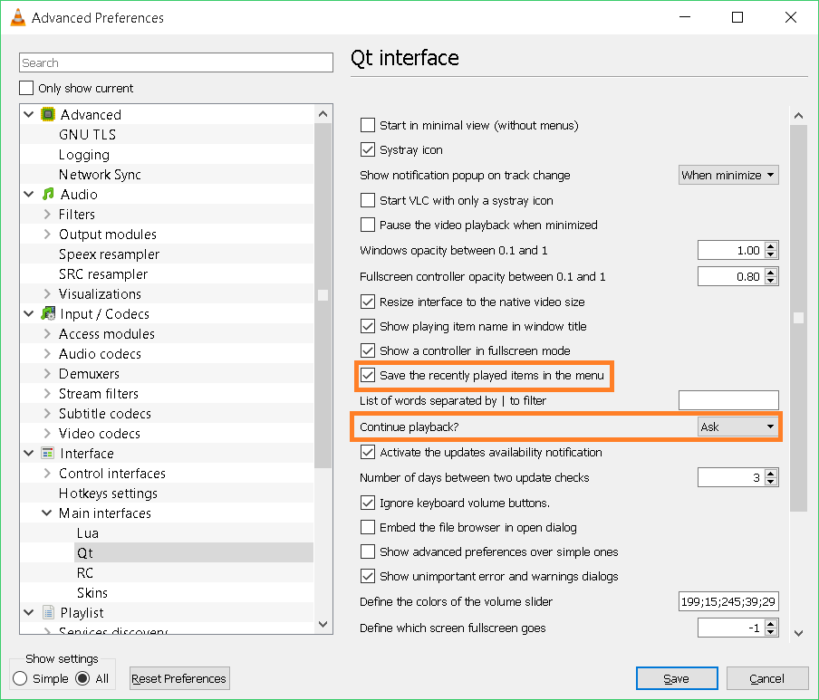

JMM Desktop - Video Player Support
Introduction
JMM Desktop has some basic video player support for Media Player Classic, PotPlayer and VLC
Media Player Classic
Functionality Supported
- Play files
- Playlist support
- Automatically mark episodes watched when a certain % is watched
Depending on your version of MPC, you should enable the following options

Pot Player
Functionality Supported
- Play files
- Playlist support
- Automatically mark episodes watched when a certain % is watched
You should enable the following settings


VLC
Functionality Supported
- Play files
- Playlist support
- Automatically mark episodes watched when a certain % is watched (VLC 2.2+)
Depending on your version of VLC, you should check the following options (No changes needed - default as shown)
